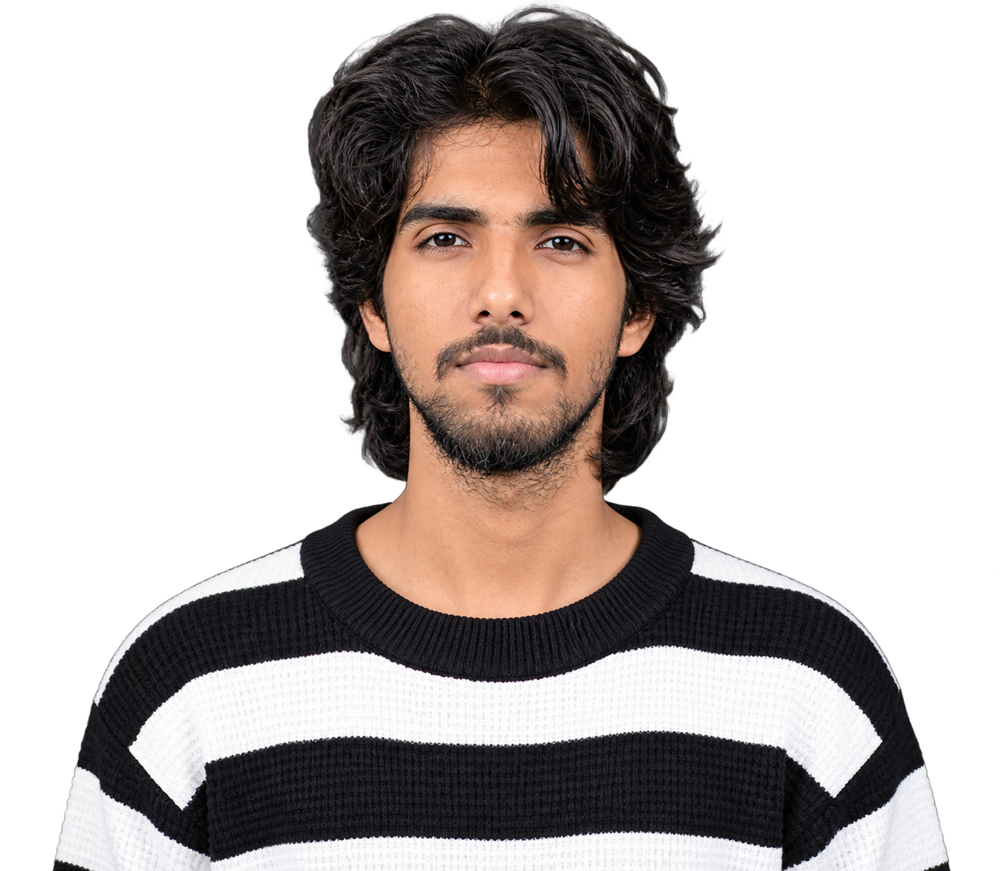

PROJECT / 001Short film
Love
A short-film project centred on visual storytelling and emotion.
View film ↗Watch on YouTube ↗
I’m Harsh Raj. I shape ideas into visual stories through filmmaking, editing and creative digital experiences — with a focus on rhythm, emotion and detail.

Behind every frame · Harsh RajA selection of film and editing projects. Each piece is a chance to explore mood, pacing and the power of a well-told story.
A short-film project centred on visual storytelling and emotion.
An editing project exploring mood, pacing and narrative flow.
A visual project built around atmosphere and storytelling.
Exploring the intersection of cinematic language, emerging tools and digital experiences.
Part instinct.
Part intention.
Always a story.
I’m Harsh Raj — a filmmaker and video editor interested in the complete creative process: understanding an idea, finding its visual language and shaping it through the final cut.
My work brings together filmmaking, post-production and experimentation with creative technology. I care about the small details that make a scene feel honest and a story memorable.
A thoughtful process keeps the creative idea at the centre while every technical choice serves the story.
Understand the purpose, audience and emotion at the heart of the idea.
Develop the visual direction, rhythm and details that give the piece its identity.
Bring picture, sound and pacing together into a considered final experience.
For filmmaking collaborations, video editing and creative projects, let’s start a conversation.
harshhcreatives@gmail.com ↗